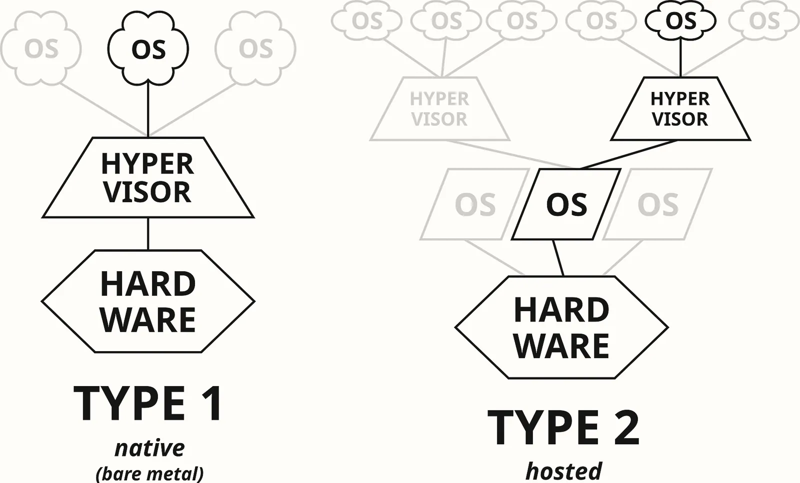
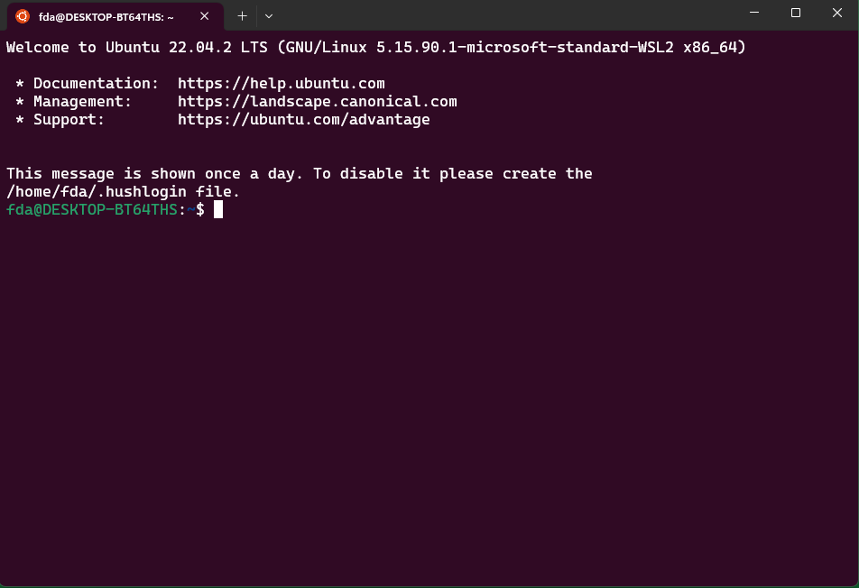
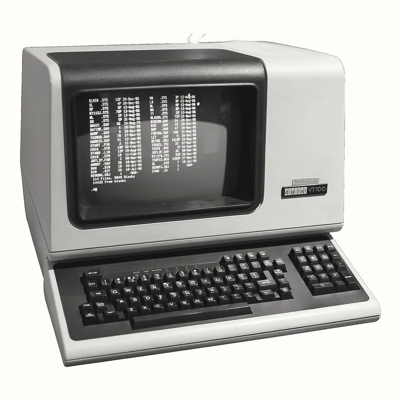
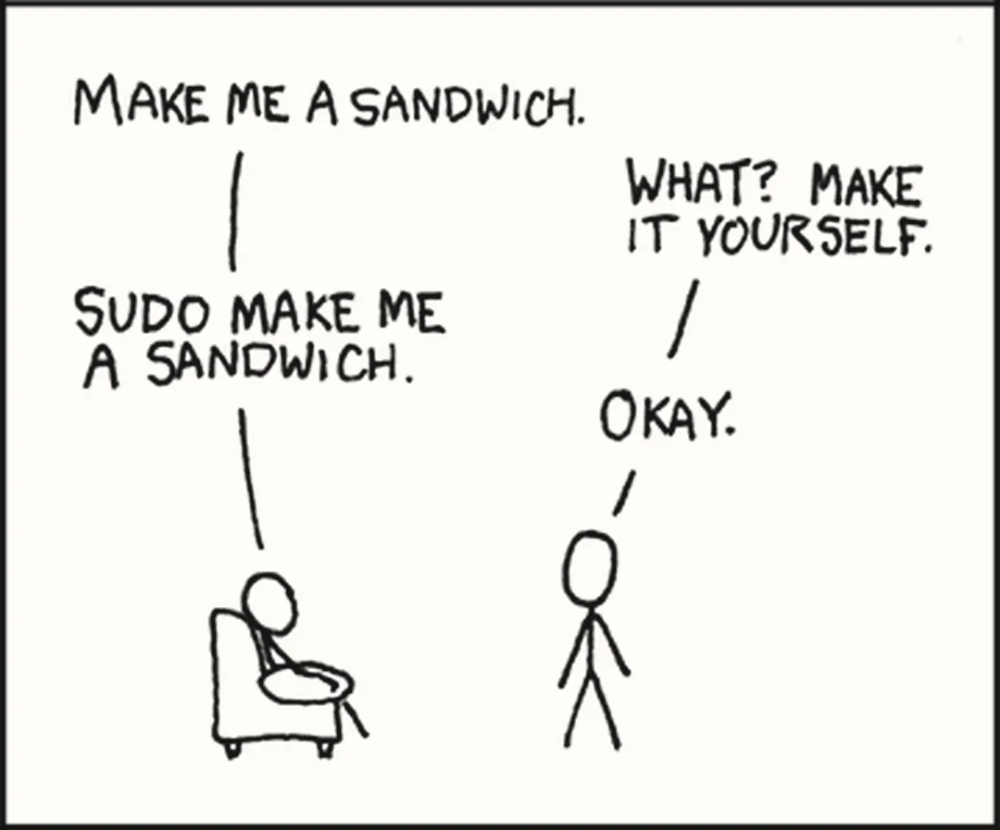

Module 1 · Bài 04
Phần lớn server chạy Linux, còn laptop của bạn chạy Windows. Làm sao có một máy Linux thật để tập ngay trên laptop, và gõ lệnh vào nó thế nào?
uname -s hỏi tên kernel đang chạy lệnh, và chỉ cửa sổ bên phải chạy trên kernel Linux. Output thật, ngày
14/11/2026.ls, nhưng không có kernel LinuxỞ Bài 03, dòng Killed process của OOM killer mình phải lấy từ Ubuntu, không lấy được từ Windows. Lý do là dòng ấy
do kernel Linux ghi. Windows có kernel riêng, lúc hết RAM thì không giết process như OOM killer mà báo lỗi cho chương trình đang
xin thêm RAM, và log của kernel Windows cũng không đọc bằng dmesg.
Thế Git Bash có lấy được dòng ấy không? Nhìn qua thì tưởng được, vì nó có ls, grep, curl, và các lệnh ấy gõ y như trên Linux. Lệnh which ls in ra tệp chương trình sẽ chạy khi bạn gõ ls, và ở Hình 1 nó ra cùng một path ở cả hai cửa sổ.
Cùng là /usr/bin/ls, vậy hai tệp ấy có phải một không? Muốn biết thì phải hiểu path trên Linux bắt đầu từ đâu. Trên Linux, mọi path đi ra từ một thư mục gốc tên là /, giống ổ C:\ bên Windows, chỉ khác là Linux chỉ có một gốc ấy, không có ổ C, ổ D. Git Bash lấy thư mục cài Git trên ổ C làm cái gốc / ấy, nên /usr/bin/ls bên Git Bash là một tệp chương trình Windows nằm trong thư mục cài Git. Còn /usr/bin/ls bên Ubuntu là một tệp chương trình Linux, nằm trong chỗ lưu tệp riêng của Ubuntu chứ không nằm trong thư mục cài Git. Vậy hai tệp ấy không phải một, chỉ trùng path. Hồi mới học về WSL, mình từng nói về Git Bash: "lệnh đó đã được biên dịch sang windows để chạy
trên máy windows nhưng mà nó cũng chỉ là hàng đè tem thôi chứ không phải linux thật". Câu ấy đúng. Mỗi lệnh trong Git Bash là một
chương trình Windows mang tên lệnh Linux, gõ thì giống nhưng chạy trên kernel Windows. Vậy Git Bash không lấy được dòng Killed process. Muốn tập làm việc với server Linux
thì phải có kernel Linux.
Phần lớn server chạy Linux, một phần vì Linux không mất tiền bản quyền cho từng máy, nên thuê một server Linux rẻ hơn server Windows cùng cấu hình. Thứ người ta cài lên server ấy không chỉ có kernel Linux, vì kernel một mình chưa có lệnh nào để gõ. Thứ người ta cài là kernel Linux đóng gói cùng một bộ chương trình và một cách cài phần mềm riêng, và cả bộ ấy gọi là Linux distribution, viết tắt là distro. Ubuntu là một distro hay gặp trên server, và lab của khoá dùng nó.
Bài 03 nói kernel là lõi của hệ điều hành, nạp lên khi máy khởi động, và mọi việc cấp RAM, chia CPU cho process đều qua nó. Laptop của bạn đã có kernel Windows giữ việc đó, nên lúc Windows đang chạy thì kernel Linux không nạp thẳng lên cái máy ấy được. Muốn chạy thêm kernel Linux thì cách thường dùng là tách một phần CPU, RAM, ổ đĩa ra làm một cái máy giả, rồi cho kernel Linux khởi động trên cái máy giả ấy như trên máy thật. Cái máy giả ấy gọi là virtual machine, viết tắt là VM.
Phần mềm tách phần cứng ra cho VM gọi là hypervisor. Ảnh 1 vẽ hai cách đặt hypervisor trên một cái máy.
WSL2, viết tắt của Windows Subsystem for Linux bản 2, chạy kernel Linux trong một VM dựng bằng hypervisor có sẵn của Windows. Hypervisor ấy nằm trong một tính năng của Windows tên là Virtual Machine Platform, có cả trên bản Home. Bật tính năng ấy lên thì Windows dùng cách bên trái của Ảnh 1, tức hypervisor nạp trước, rồi kernel Windows chạy trên hypervisor. Kernel Linux trong VM của WSL2 là bản Microsoft biên dịch từ mã nguồn Linux, và Ubuntu chạy trên kernel đó. Bạn không phải tự tạo VM hay chia RAM; WSL2 tự bật VM khi bạn mở Ubuntu và tự tắt khi không ai dùng.

Vậy trên laptop có hai kernel chạy cạnh nhau, cùng dùng CPU và RAM của một cái máy qua hypervisor. VM của WSL2 chỉ được dùng RAM tới một mức trần, và thường chỉ xin thêm RAM của laptop khi Linux cần. Nên lúc Ubuntu rảnh, VM thường không chiếm hết mức trần, phần RAM nó chưa xin thì Windows vẫn dùng được. Hình 2 cho bạn gõ cùng một lệnh vào Git Bash và Ubuntu rồi xem lệnh đi xuống tới kernel nào. Lệnh free -h trong hình cho thấy mức trần RAM ấy.
$ chọn một lệnh ở trên$ chọn một lệnh ở trênLệnh free in tổng RAM, RAM đã dùng và RAM còn trống; thêm option -h thì số được đổi ra đơn vị dễ đọc. Gi và Mi trong output gần bằng GB và MB. Bấm free -h ở Hình 2 thì Git Bash báo không có lệnh ấy, vì bộ cài Git Bash không mang theo chương trình free. Bên Ubuntu, dòng Mem ghi tổng 10 GB, tức mức trần RAM của VM. Mức trần này mặc định bằng một nửa RAM của laptop, tức khoảng 7,6 GB trên máy mình. Ubuntu thấy 10 GB là vì mình đã chỉnh mức trần lên trong tệp cấu hình của WSL. Máy bạn chưa chỉnh gì thì ra khoảng một nửa RAM.
RAM thì mỗi kernel quản lý phần của mình, nhưng Ubuntu và Windows vẫn mở được tệp của nhau. Trong Ubuntu, ổ C của Windows hiện
ra ở thư mục /mnt/c; trong Windows, tệp của Ubuntu hiện ra ở mục Linux của File Explorer.
Giờ tới lượt bạn cài WSL2 và Ubuntu trên laptop. Đã cài Ubuntu để chạy lab ở Bài 03 thì bỏ qua bước 1, sang bước 2 kiểm tra nó chạy bằng WSL2. Các bước chạy trên Windows 11; Windows 10 từ bản 2004 (build 19041) trở lên cũng có lệnh wsl --install.
Mở PowerShell bằng quyền quản trị: chuột phải vào PowerShell trong menu Start, chọn Run as administrator. Rồi chạy lệnh cài; option
-d Ubuntu chọn distro Ubuntu. Theo trang hướng dẫn của Microsoft, lệnh này tự bật tính năng Virtual Machine Platform, nên bạn không phải bật bằng tay; nó còn tải kernel Linux, tải Ubuntu, và có thể đòi khởi động lại Windows. Máy của mình đã cài từ trước nên mình không có output
của lần cài.
PS> wsl --install -d UbuntuCài xong, cửa sổ Ubuntu tự mở và hỏi tên user, mật khẩu cho máy Linux này. Hai thứ ấy không cần giống tài khoản Windows, nhưng nhớ mật khẩu, vì bước 5 cần nó.
Trong PowerShell (bỏ qua bước 1 thì mở PowerShell bình thường, không cần quyền quản trị), chạy hai lệnh dưới. Option -l liệt kê các distro đã cài. Option -v in thêm trạng thái của mỗi distro, và cho biết nó chạy bằng WSL1 hay WSL2; WSL1 là version cũ, không có VM. Lệnh wsl --version in version của phần mềm WSL và của kernel Linux đang cài.
PS> wsl -l -v
NAME STATE VERSION
* Ubuntu Stopped 2
docker-desktop Stopped 2
PS> wsl --version
WSL version: 2.7.13.0
Kernel version: 6.18.33.2-2
...Cột VERSION của dòng Ubuntu phải là 2. Nếu ra 1 thì Ubuntu đang chạy bằng WSL1, không có VM, cũng không có kernel Linux thật; chuyển sang bản 2 bằng wsl --set-version Ubuntu 2. Dòng docker-desktop chỉ có khi máy đã cài
Docker Desktop, nên máy bạn không có dòng này cũng không sao. Còn dấu * ở đầu dòng Ubuntu đánh dấu distro sẽ mở ra khi bạn gõ wsl không kèm tên. Stopped nghĩa là distro đang không chạy. Lúc mình chạy lệnh, không ai mở hai distro ấy, nên VM của WSL2 cũng đang tắt. Cửa sổ Ubuntu từ bước 1 còn mở thì dòng Ubuntu ghi Running, nghĩa là VM đang chạy.
Mở Ubuntu từ menu Start. Cửa sổ Ubuntu là một cửa sổ bình thường của Windows, nhưng mọi lệnh gõ
trong đó chạy trên kernel Linux của VM. Gõ uname -r để xem version kernel. Kernel này do WSL cài, và nếu bạn cài sau ngày mình chạy thì có thể ra số mới hơn. Ubuntu cũng có version riêng, như 26.04, và số ấy không liên quan tới số của kernel, nên đừng lẫn hai số với nhau.

$ uname -r
6.18.33.2-microsoft-standard-WSL2Chữ microsoft-standard-WSL2 cho biết đây là kernel Linux do Microsoft biên dịch cho WSL2, trùng số 6.18.33.2 với dòng
Kernel version của wsl --version ở bước 2. Gõ cùng lệnh ấy trong Git Bash thì ra
3.4.10-bc1f6498.x86_64, như Hình 2. Con số đó là version của library mà các chương trình Git Bash gọi tới để chạy
được trên Windows, còn kernel chạy các lệnh của Git Bash là kernel Windows.
Cửa sổ Ubuntu bạn vừa mở chỉ nhận phím bạn gõ rồi hiện chữ ra. Đọc dòng bạn gõ, hiểu nó, chạy lệnh tương ứng là việc của một chương trình khác, chạy trên Ubuntu và nối vào cửa sổ ấy. Chương trình ấy gọi là shell.
Còn cái cửa sổ thì gọi là terminal, tên lấy từ những chiếc máy có màn hình và bàn phím nối vào máy tính lớn ngày trước, như ở Ảnh 3. Trong bài, mình gọi gọn nó là cửa sổ.
Shell có sẵn trên Ubuntu tên là bash, cũng là shell chạy trong Git Bash, nên dòng bash: free: command not found ở Hình 2 là bash báo.
Mỗi khi bash chờ bạn gõ, nó in ra chuỗi user@host:~$, gọi là prompt; trước
@ là tên user, giữa @ và dấu : là tên máy. Trong bài, mình rút prompt lại chỉ còn dấu
$, và đổi tên user, tên máy thật trong output thành user và host.
Dấu ~ trong prompt ấy là home directory, thư mục riêng của mỗi user, giống C:\Users\<tên bạn> trên Windows. Mở Ubuntu ra thì bash đứng ở home directory, và lệnh pwd in ra thư mục bash đang đứng.

$ pwd
/home/userGõ ps -o pid,ppid,comm rồi Enter. Lệnh ps in danh sách những process chạy từ cửa sổ này; option
-o chỉ chọn cột để in, không đổi danh sách ấy. pid là PID, comm là tên chương trình.
$ ps -o pid,ppid,comm
PID PPID COMMAND
1966 1965 bash
2341 1966 psDưới dòng tên cột là hai dòng, mỗi dòng một process. Cột PPID là PID của process đã sinh ra process ở dòng đó. Dòng ps có PPID 1966, trùng PID của bash, nghĩa là bash đã nhờ
kernel tạo ra process ps. Hình 3 kể lại từng bước, từ lúc bạn bấm Enter tới lúc prompt hiện lại.
$ ps -o pid,ppid,comm
ps và các option/usr/bin/psps hỏi kernel danh sách process rồi in raps. Bash đọc dòng, tìm chương trình, nhờ kernel tạo process, chờ
process chạy xong, rồi quay về chờ dòng tiếp theo.Bước tìm chương trình dựa vào PATH, một danh sách thư mục mà bash lục lần lượt để tìm tệp mang tên lệnh. Lệnh which
cho biết bash sẽ tìm thấy tệp nào.
Nhưng không phải lệnh nào bash cũng đi tìm trong PATH: có lệnh không nằm trong tệp nào mà có sẵn trong bash, như cd, lệnh đổi thư
mục. Vì sao cd phải có sẵn trong bash? Vì mỗi process có một thư mục đang đứng của riêng nó. Nếu cd là
một chương trình riêng thì bash phải tạo process mới cho nó; process ấy đổi thư mục của chính nó rồi thoát, còn bash vẫn đứng
nguyên chỗ cũ. Lệnh có sẵn như thế gọi là builtin, và lệnh type cho biết một lệnh là tệp hay là builtin.
$ which ls
/usr/bin/ls
$ type cd
cd is a shell builtinThư mục / là gốc của cây thư mục, và ls / in những gì nằm ở gốc ấy. Trong đó có home, nơi chứa home directory /home/user mà pwd in ra lúc nãy. Các thư mục còn lại trong khối dưới thì bạn cứ đọc lướt. Còn ls /mnt in các ổ Windows mà WSL2 gắn vào thư mục /mnt.
Ở dòng cuối của khối dưới, c là ổ C, x là ổ X trên máy mình; máy bạn có ổ nào thì thấy chữ cái của ổ ấy. Hai mục wsl, wslg là thư mục WSL2 tự tạo, không phải ổ đĩa, nên bạn cứ bỏ qua. Không thấy c thì WSL2 chưa gắn ổ C vào. Chạy wsl --shutdown trong PowerShell để tắt hẳn VM của WSL2, rồi mở lại Ubuntu cho nó khởi động lại và gắn ổ.
$ ls /
bin dev home lib lost+found mnt proc run snap sys usr
boot etc init lib64 media opt root sbin srv tmp var
$ ls /mnt
c wsl wslg xỞ Bài 03, app mẫu chạy trên Windows; giờ thử chạy chính tệp jar ấy trên Linux. Muốn vậy thì cần Java, mà Ubuntu mới cài chưa có Java. Phần mềm cho Ubuntu đóng thành các tệp gọi là package, và một phần mềm lớn như Java có thể chia thành nhiều package. Tải các package ấy từ server của Ubuntu về rồi cài là việc của apt, một chương trình có sẵn trên Ubuntu.
Cài phần mềm cho cả máy thì apt cần quyền của root, tức user có mọi quyền trên máy. Vì vậy lệnh cài có sudo đứng trước, và máy hỏi mật khẩu bạn đặt lúc cài Ubuntu.
Lúc chạy apt install, apt không hỏi server bản mới nhất là bản nào. Nó đọc một danh sách package lưu sẵn trên máy, tải
về từ lần cập nhật trước, nên trước khi cài thì chạy apt update để tải danh sách mới về. Gói cần cài là
openjdk-25-jre-headless, bản Java chỉ để chạy chương trình, không có javac và không có phần vẽ cửa sổ, nên
hợp với server không có màn hình. Dòng cần đọc là dòng Setting up, nơi apt báo đã cài bản nào.

$ sudo apt update
$ sudo apt install openjdk-25-jre-headless
...
Setting up openjdk-25-jre-headless:amd64 (25.0.5.0.3+1-1~26.04.1) ...Trên máy mình, Ubuntu đã cài từ lâu, và lần đầu mình chạy thẳng apt install mà chưa chạy apt update. Lệnh apt báo lỗi 404, nghĩa là nó đi tải một bản Java mà server của Ubuntu không còn giữ. Danh sách gói trên máy đã cũ, vẫn ghi bản 25.0.4.1,
trong khi server đã thay bằng bản mới hơn. Dòng cuối của lỗi, ở khối dưới, gợi ý luôn cách sửa: chạy apt update rồi cài lại, và lần
ấy apt cài bản 25.0.5.0.3 như khối trên.
$ sudo apt install openjdk-25-jre-headless
...
E: Failed to fetch http://security.ubuntu.com/ubuntu/pool/main/o/openjdk-25/openjdk-25-jre-headless_25.0.4.1%2b1-1%7e26.04.4_amd64.deb 404 Not Found [IP: 91.189.90.11 80]
E: Unable to fetch some archives, maybe run apt update or try with --fix-missing?Gõ java -version; dòng đầu output phải có số 25. Nếu bash báo command not found thì bước 5 chưa cài xong; đọc lại output của lệnh apt install, tìm dòng báo lỗi, tức dòng bắt đầu bằng E:.
$ java -version
openjdk version "25.0.5.0.3" 2026-10-24
OpenJDK Runtime Environment (build 25.0.5.0.3+1-1-26.04.1-Ubuntu)
OpenJDK 64-Bit Server VM (build 25.0.5.0.3+1-1-26.04.1-Ubuntu, mixed mode, sharing)Tệp jar của app mẫu đã build trên Windows ở Bài 03, nằm trong thư mục lab/sample-app/target của repo. Java trên Ubuntu chạy thẳng được tệp jar nằm trong /mnt, nhưng đọc tệp của Windows qua /mnt chậm hơn đọc tệp của chính Ubuntu. Vì vậy bạn chép tệp jar vào thư mục ~/lab, tức thư mục lab trong home directory /home/user. Repo của mình nằm ở ổ X, trong Ubuntu là /mnt/x/IdeaProjects/devops_selfLearning. Nếu ở Bài 03 bạn clone ngay lúc mở Git Bash thì repo nằm ở /mnt/c/Users/<tên bạn>/devops-self-learning, nên thay đoạn /mnt/x/IdeaProjects/devops_selfLearning trong lệnh cp dưới bằng path ấy.
Lệnh mkdir -p tạo thư mục ~/lab, và nếu thư mục đã có thì nó cũng không báo lỗi. Rồi cp chép tệp jar từ path thứ nhất sang thư mục ấy, và ls -l in tên tệp trong thư mục ấy kèm cỡ tính bằng byte để bạn so với lúc build. Dòng total và cột quyền ở đầu thì bạn cứ đọc lướt; cột cỡ tệp và cột ngày giờ thì đoạn dưới nói.
$ mkdir -p ~/lab
$ cp /mnt/x/IdeaProjects/devops_selfLearning/lab/sample-app/target/sample-app.jar ~/lab/
$ ls -l ~/lab
total 23932
-rwxr-xr-x 1 user user 24505709 Nov 13 19:33 sample-app.jarTệp vẫn nặng 24.505.709 byte như trên Windows, vì cp chép nguyên từng byte. Ngày giờ ghi trên tệp là lúc cp tạo bản chép. Tệp ghi 19:33 ngày 13/11 dù mình chép lúc 2 giờ 33 sáng 14/11 giờ Việt Nam, vì Ubuntu trên máy mình tính giờ theo UTC,
giờ quốc tế chậm hơn giờ Việt Nam 7 tiếng. Nếu cp báo No such file or directory thì path sau
/mnt chưa khớp chỗ bạn để repo, hoặc bạn chưa build tệp jar ở Bài 03.
Tệp jar chạy được trên Linux mà không cần build lại, vì jar chứa bytecode của JVM, máy nào có Java cũng chạy được. Chạy nó y như trên Windows. Dòng cần đọc là dòng cuối, nơi app mẫu in PID. Mình bỏ cột ngày giờ ở đầu hai dòng log cho gọn.
$ cd ~/lab
$ java -jar sample-app.jar
...
INFO 2338 --- [sample-app] [ main] o.s.boot.tomcat.TomcatWebServer : Tomcat started on port 8080 (http) with context path '/'
INFO 2338 --- [sample-app] [ main] sampleapp.SampleApp : Started SampleApp in 2.16 seconds (process running for 2.625)
[sample-app] PID = 2338, listening on port 8080Cứ để app chạy trong cửa sổ ấy, rồi mở thêm một cửa sổ Ubuntu nữa từ menu Start để gọi nó. App mẫu trả về PID của nó. Vẫn tệp jar ấy, vẫn code ấy, nhưng giờ nó là một process trên kernel Linux, PID 2338.
$ curl -s http://localhost:8080/
{"pid":2338,"app":"sample-app"}Quay về cửa sổ đang chạy app, bấm Ctrl+C. App in vài dòng log báo nó đang dừng, rồi bash hiện lại prompt. Thư mục ~/lab và Java cứ để
lại, lần sau mở Ubuntu là có sẵn. Đóng hết các cửa sổ Ubuntu, kể cả cửa sổ thứ hai ở bước 9, thì WSL2 tự tắt VM sau một lúc; muốn tắt ngay thì chạy
wsl --shutdown trong PowerShell.
Vậy là trên laptop đã có một máy Linux: Windows dựng một VM, chạy kernel Linux trong đó, và Ubuntu chạy
trên kernel ấy. Lệnh bạn gõ vào máy ấy đi qua bash. Builtin như cd thì bash tự làm, lệnh khác thì bash tìm tệp
trong PATH rồi nhờ kernel tạo process để chạy tệp đó, kể cả java -jar của app mẫu.
uname -s và thấy Linux. Cửa sổ ấy có thể là Git Bash không? Nếu cửa sổ ấy là Ubuntu và vừa có một process bị OOM killer giết, sudo dmesg có cho thấy dòng Killed process không?dmesg biên dịch cho Git Bash rồi cài vào. Chạy nó trên Windows, bạn có đọc được dòng
Killed process của OOM killer không? Vì sao?free -h ghi tổng 10 GB. Bạn tắt app rồi chạy wsl --shutdown trong PowerShell. Lúc này VM của WSL2 còn giữ phần nào trong 15,2 GB RAM của laptop không, và vì sao?java -version trong Git Bash và trong Ubuntu, hai cửa sổ in hai bản Java khác nhau. Vì sao cùng một laptop
mà có hai bản Java, và mỗi bản chạy trên kernel nào?ps -o pid,ppid,comm hai lần liền. PPID của dòng ps có đổi không? PID của nó thì sao?apt (bản 24.04; bản 26.04 dùng cùng lệnh).
manpages.ubuntu.com/manpages/noble/man8/apt.8.html